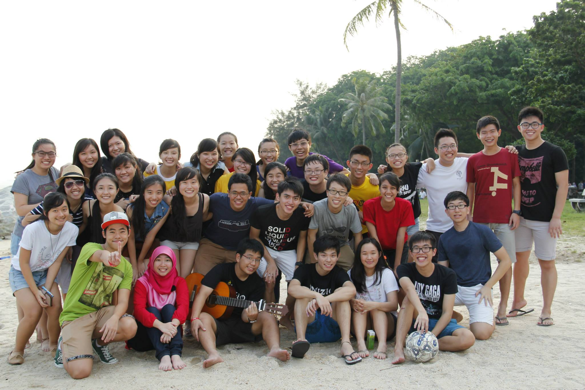
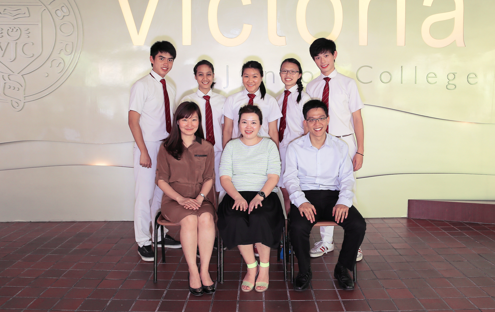
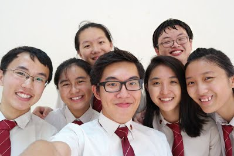

The Batch of 2013-2014
The Choir
Sopranos
-
Kiang Wen Jen (SL) ● Elsa Tong ● Lee You Xuan ● Chen Hui Ting ● Cheryl Ang ● Jamie Koh ● Chin Ying Xin ● Ng Yuting ● Chan Xing Yun
Altos
-
Shafiqah Shahrin (SL) ● Jodie Ng ● Shi Ganyu ● Ellis Yee ● Hilary Low ● Hilary Toh ● Wang Qi ● Lidiya Hidhir ● Celine Chang ● Lim Jia Ying
Tenors
-
Baek Jongwoo (SL) ● Mitchell Yap ● Tseng Wen Yu ● Luo Yigong ● Chae Sae Han ● Angga Wiratama
Basses
-
Shaun Goh (SL) ● Aloysius Eng ● Joshua Lim ● Ethan Loh ● Andre Tng ● Ernest Lim ● Adrian Kevin Wijono ● Brendan Ng
Excecutive Committee
Ethan Loh (P), Lidiya Hidhir (T), Ellis Yee (S), Lim Jia Ying (GAM), Joshua Lim (VP)
Music Committee

Tseng Wen Yu, Andre Tng, Shafiqah Shahrin, Kiang Wen Jen, Shaun Goh, Baek Jongwoo
Welfare Committee
Luo Yigong, Celine Chang, Chen Hui Ting, Ernest Lim, Ng Yuting, Mitchell Yap, Elsa Tong